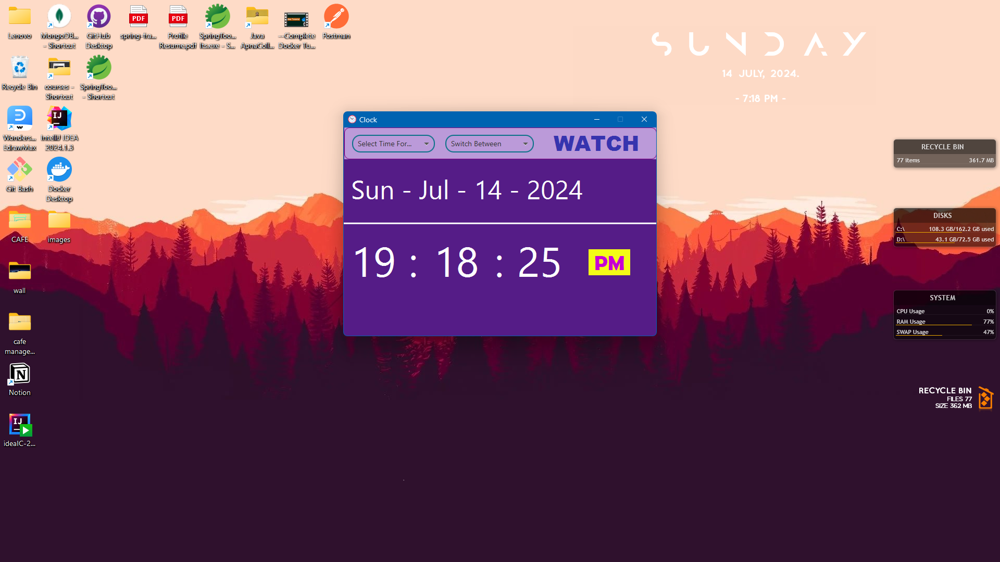
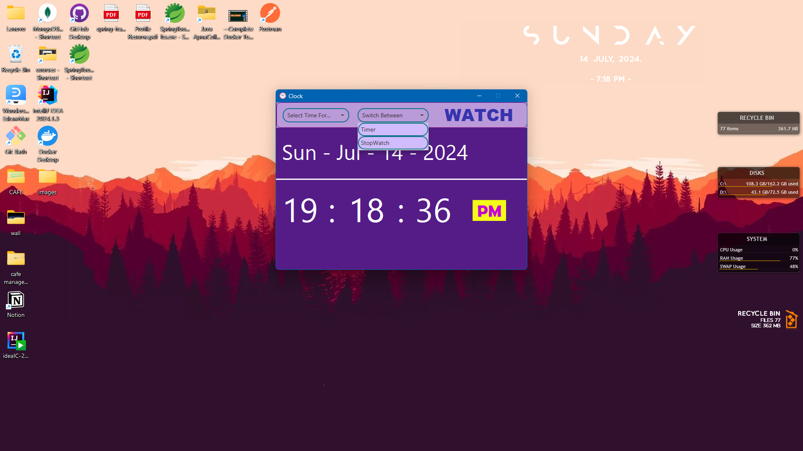
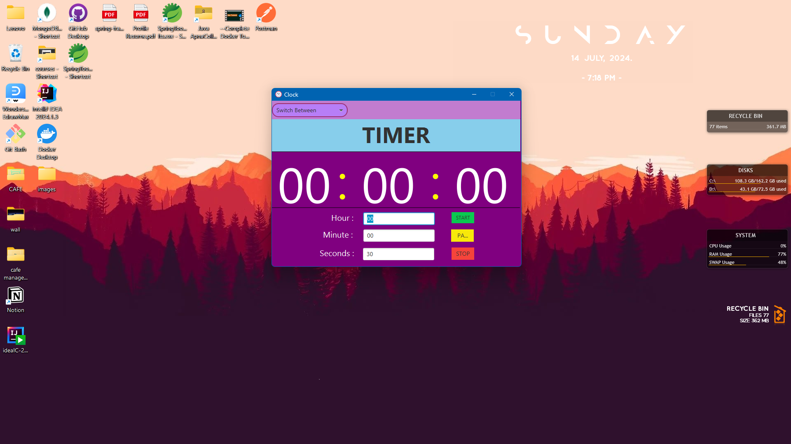
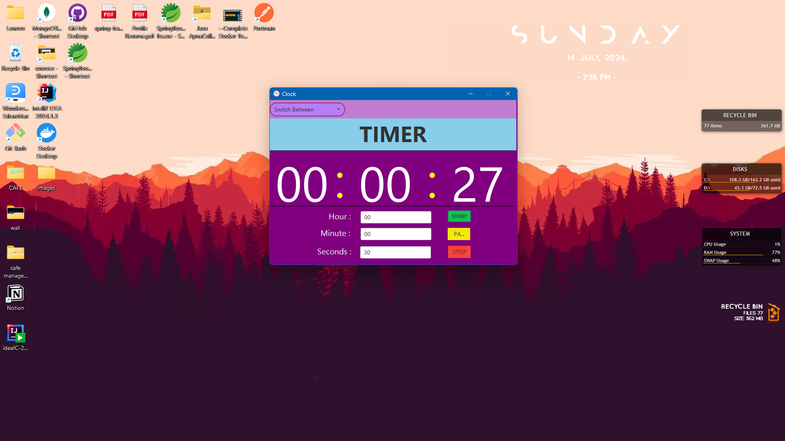
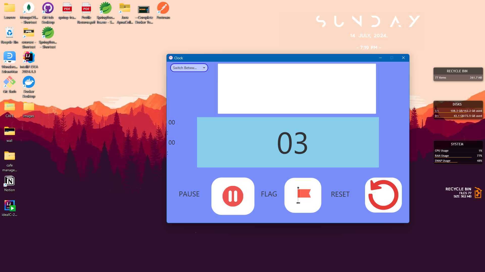
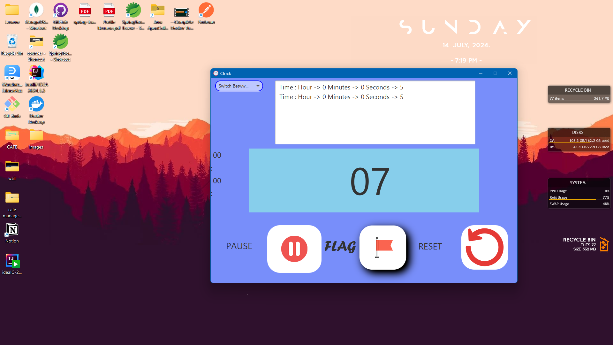

Preview and snapshot of the clock
- user can switch between 12hr/24hr time format
- they can switch between clock/stopwatch and timer by using the drop down menu


Preview and snapshot of the timer
- user can start/puase and stop the timer any time using the start/stop and pause button
- they can switch between clock/stopwatch and timer by using the drop down menu



Preview and snapshot of the stopwatch
- user can start or reset the stopwatch at any time
- they can also record the time stamps by clicking on the flag button
- they can switch between clock/stopwatch and timer by using the drop down menu

